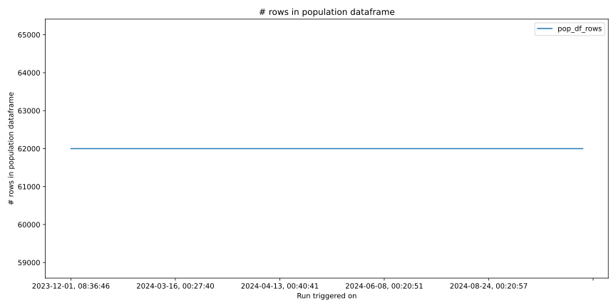
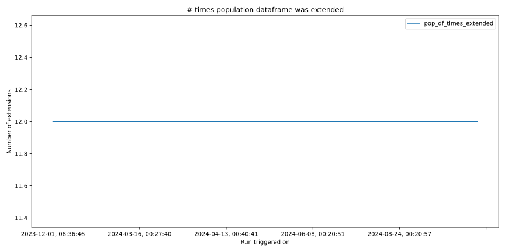

Run Statistics¶
CPU Time¶

# rows in population dataframe¶
# cols in population dataframe¶

Memory used by population dataframe¶

# times population dataframe was extended¶
Disk read (MB)¶

Disk write (MB)¶

Disk read time (s)¶

Disk write time (s)¶